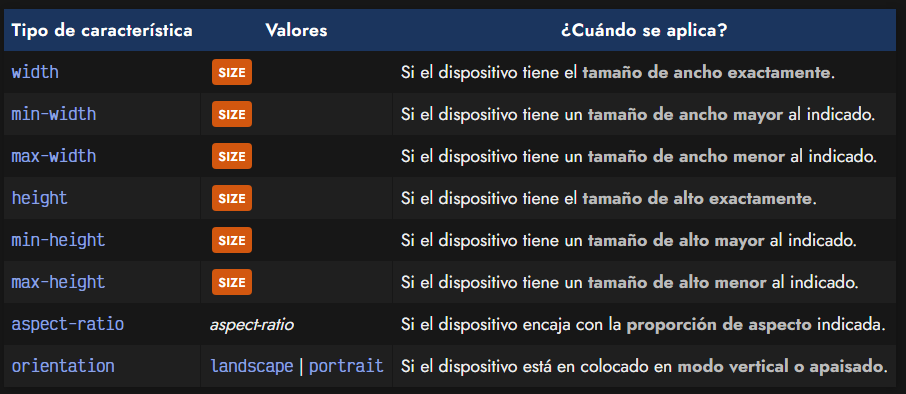

¿Que es Media Queries?
Existe un concepto denominado media queries, mediante el cual podemos hacer excepciones para que unos determinados estilos de diseño sólo se apliquen si se cumplen una serie de condiciones, generalmente relacionadas con el dispositivo mediante el cual se está viendo la página.
